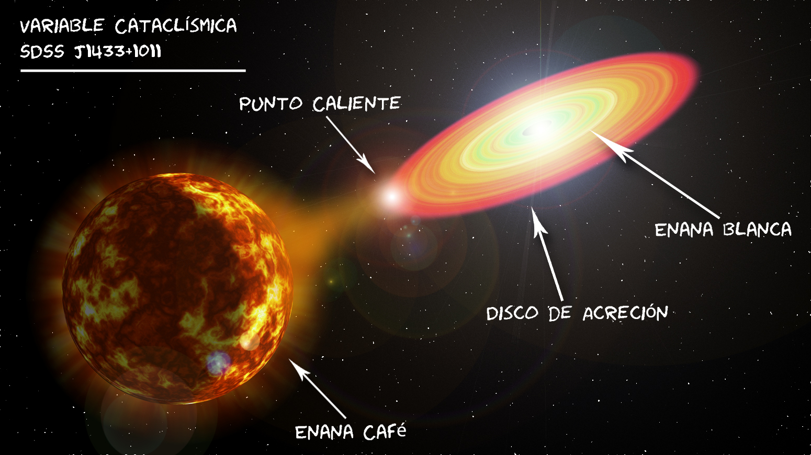

Estrellas que acretan y explotan...
Enanas blancas
Mi principal campo de investigación durante mi doctorado fue el estudio de variables cataclísmicas, una clase de binarias interactivas que contienen una enana blanca. Estos sistemas binarros consisten de una estrella de baja masa la cual transfiere material a la enana blanca a través de un disco de acreción. Estos sistemas son fantásticos laboratorios para estudiar la física de discos de acreción, explosiones de material sobre la superficie de la enana blanca (conocidas como "novas"), atmósferas sub-estelares, entre otras...

En particular, me he concentrado en la evolución tardía de estos sistemas, tratando de identificar y caracterizar a la estrella compañera la cual ha realizado la transición a un regimen sub-estelar (también conocidas como enanas cafés). Además, la ahora "enana café" es sujeta a un flujo irradiante de la enana blanca, la cual cambia las propiedades observadas de su atmósfera, como su temperatura superficial. La posibilidad de medir este "albedo" y la eficiencia de procesar esta energía dentro de la atmósfera nos ha permitido abrir una nueva forma de estudiar las propiedades de objetos sub-estelares y exo-planetas. Puedes leer con más detalles sobre estos resultados en la pagina dedicada a mi artíículo reciente publicado en Nature sobre J1433.
El eslabón perdido
Millisecond pulsars (MSPs) are a sub–class of very old, rapidly rotating neutron stars with spin periods less than 10 ms. This apparent contradiction has been reconciled if the nuetron star could be recycled or spun-up by accretion, the so-called "recycling scenario". As the companion star evolves and fill its Roche lobe, accretion onto the neutron star occurs. These systems, also known as low–mass X–ray binaries (LMXBs), can spin-up the neutron star by transferring angular momentum from the accreted material of the donor star.
We find evidence of this scenario in systems that switch between LMXB and MSP states. PSR J1023+0038 is one of only three confirmed systems where this transition has been observed. Only last year, this system turned on again as a LMXB, and the radio pulsations were no longer detected. I am part of a multiwavelength campaign to observe this system, in particular the ultraviolet spectra with the Hubble Space Telescope, where the accretion disc light dominates.